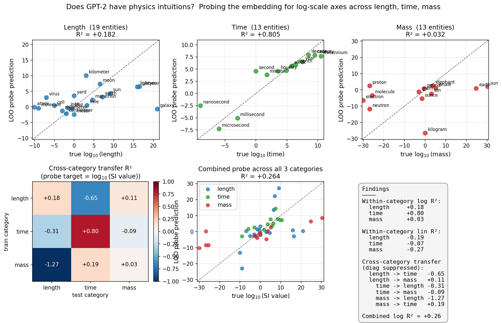
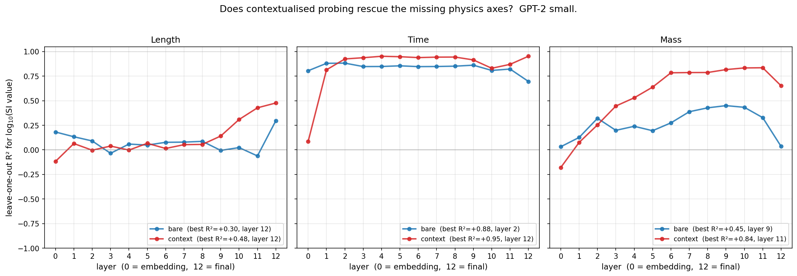

The setup
In an earlier post I showed that GPT-2 small’s token embedding represents integer magnitude on a roughly logarithmic axis (R^2 = 0.95 for \log_2(x)). The natural generalisation: does the same model represent physical magnitude — sizes, durations, masses — on similar axes?
It’s not obvious which way this should go. On one hand, GPT-2 has read text about atoms (10^{-10} m), humans (\sim 1 m), and galaxies (10^{21} m). A unified “small-to-big” axis would let the model encode 30 orders of magnitude in a single direction, which is efficient. On the other hand, words like electron, kilogram, galaxy, and marathon are first particles, units, celestial bodies, and races; their mass or length is a secondary attribute that the language model may or may not have factored out into a clean direction.
To test, I assembled three lists of physical entities with known SI values:
- Length (19 entities, log₁₀ spanning -10 to +21):
atom,virus,cell,meter,inch,mile,marathon,earth,sun,lightyear,parsec,galaxy, etc. - Time (13 entities, log₁₀ from -9 to +10.5):
nanosecond,millisecond,second,minute,hour,day,month,year,decade,century,millennium, etc. - Mass (13 entities, log₁₀ from -30 to +30):
electron,proton,gram,ounce,pound,kilogram,ton,elephant,whale,earth,sun.
For each entity I take the embedding of " {name}" (single space prefix) and use the last token’s residual at layer 0. With small datasets I use leave-one-out cross-validation on a ridge probe.
The two hypotheses being tested:
- H1 (separate axes). Each physical dimension has its own log axis, not shared with the others. Probes trained on one don’t transfer.
- H2 (unit-agnostic magnitude). There is a shared “small-to-big” direction; the same probe works across length, time, and mass.
The result

The headline numbers:
| Category | Within-category log R² | Within-category linear R² |
|---|---|---|
| Time | 0.81 | -0.07 |
| Length | 0.18 | -0.19 |
| Mass | 0.03 | -0.27 |
Time is encoded on a clear log axis. Length is mostly noise. Mass is essentially random.
Cross-category transfer is mostly negative, with one exception: time → mass gives R^2 = +0.19, which is barely above zero but more than the others. The combined probe across all 45 entities gives R^2 = 0.26 — there’s some shared structure, but it’s weak.
So both hypotheses lose: there is no clean unit-agnostic axis, but neither do the per-category axes individually work well. The model has a clean log-time axis, weak log-length, no log-mass.
Why time works and the others don’t
The first thing to ask is whether time is special because of physics or because of language. I think it’s mostly language. Time words form a conventional one-dimensional ladder in English:
nanosecond → microsecond → millisecond → second → minute → hour → day → week → month → year → decade → century → millennium
These tokens are functionally interchangeable in many contexts — "for five {time-word}" parses for almost every entry in that ladder. The embedding can therefore afford to compress them along a single “duration” direction, because almost everything else about these words is shared (they’re all temporal units modifying durations and frequencies).
Length and mass don’t have an analogous unidimensional ladder. The “length words” I used are a mix of:
- Units of measurement:
millimeter,inch,meter,mile,lightyear,parsec - Objects characterised primarily by length scale:
atom,virus,cell,galaxy - Specific entities:
earth,sun,moon,marathon
These belong to different semantic categories. The embedding of atom probably encodes “this is a kind of particle” more strongly than “this is 10^{-10} m long”. The embedding of marathon encodes “this is a race” more strongly than “this is 42 km”.
Mass is worse still. electron, proton, and neutron are subatomic particles; gram, ounce, pound, kilogram, ton are units; elephant, whale are animals; earth, sun are celestial bodies. The mass-magnitude attribute these all share is a tertiary feature, not something the embedding has factored out into a clean direction.
If this hypothesis is right, then probing mass with disambiguating context should rescue the result. For each entity, instead of just the bare token, use a prompt like "The mass of a typical {entity} is" and probe the residual at the final token. The model is then forced to think about mass, not entity identity, so the magnitude representation should be cleaner. Same trick should help length too. I’ll come back to this.
What it tells you about LLM “physics intuition”
A claim you sometimes see: large language models have learned a coherent physical world model from text. Whatever else this means, it would have to include something like a shared magnitude axis — knowing that “galactic” things are big in both length and mass, that “atomic” things are small in both, that “millennial” describes long times.
This experiment is the smallest possible test of that claim, and the result is: GPT-2 small has built a clean axis for time but not for length or mass. The unit-agnostic “small to big” axis is at best very weakly present (combined R^2 = 0.26 across 45 entities), and the per-category transfer is mostly negative.
I want to be careful about how much weight this puts on the negative claim. The test uses unembellished token embeddings, no context, and a small entity list. It tests whether the LLM has the axes “for free”, at the very first layer. Almost certainly:
- A bigger model would do better. Pythia-1.4B and Llama would have more capacity to factor magnitude out from category.
- A model probed with context would do better. The “mass of an elephant” context steers the residual stream toward representing mass specifically.
- A model probed later in the network would do better. By layer 12 the transformer has integrated context with the token; that probably combines “this is an elephant” + relevant magnitude knowledge.
So the right summary is: at the embedding layer, GPT-2 has built a clean log-time axis but has not factored magnitude out from length-related and mass-related token semantics. The model has time-scale intuition more readily than length-scale or mass-scale intuition, because temporal nouns in English happen to form a clean one-dimensional ladder.
A specific prediction — and the test
The hypothesis above predicts that contextualised probing should rescue length and mass. If I prompt "The mass of a typical {entity} is about" instead of feeding the bare entity word, then by the time the residual stream reaches the last token ("about"), the model has been told what quantity to think about. The magnitude information that was hiding behind category should now surface on a probe-friendly direction.
To test, I re-ran the experiment with context. For each category, the prompt template is "The {size|duration|mass} of a typical {entity} is about", and I probe the residual stream at the last token, across all layers.
Going from bare-token probing to contextualised probing, the mass R² jumps from 0.45 to 0.84 (best layer). Time goes from 0.88 to 0.95. Length from 0.30 to 0.48. The model has the magnitude information; the bare token just doesn’t store it on a probe-friendly direction.

The layer profile of each curve tells a small mechanistic story:
- Bare time peaks at layer 2 and gradually declines through later layers — the magnitude information sits in the embedding itself and gets diluted by subsequent processing. The temporal ladder really is built into how the tokenizer/embedding handles these words.
- Contextualised time, length, and mass all peak at the final layer (or close to it). The context-driven magnitude representation is built up across the network, not present at the embedding.
- Bare mass rises from R^2 = 0.03 at layer 0 to 0.45 at layer 9 before falling back. Even without context, the transformer recovers some mass-magnitude representation by mid-network — though much less than with context.
The cleanest summary: GPT-2 has rich physical-magnitude knowledge across all three categories, but only time stores it at the embedding layer. Length and mass require context-driven processing through the layers to extract their magnitude information. The asymmetry was real, but the right diagnosis isn’t “the model doesn’t know” — it’s “the model knows but needs the right question to surface it”.
What’s next
With the context-rescue result in hand, the obvious follow-ups shift:
Dimensional analysis. Does GPT-2 have a “units” axis? For prompts like "velocity has units of", can it predict the right answer? Can the model distinguish m/s (a velocity) from m·s (a strange quantity) in its internal representations? A probe along the lines of “given the residual stream, can you predict the dimensional formula?” would test the model’s grasp of unit composition.
Order-of-magnitude estimation. Standard Fermi questions (“How many piano tuners are there in Chicago?”) test the model’s ability to multiply rough estimates in head. If the integer-multiplication shortcut work I did earlier extends, the model should handle these via log-axis addition.
Scale-ladder representation across modalities. If we could combine text + image embeddings (e.g., in CLIP or a multimodal LLM), is there a “scale” axis that lines up across image of atom and image of galaxy? The conjecture: in a model trained on enough multimodal data, yes, because images come with implicit scale cues (microscope, telescope, etc.).
Test the linguistic-ladder hypothesis directly. Take a bunch of abstract concept categories where the words do form a clean ladder (temperature: cold, cool, warm, hot, boiling; speed: slow, crawling, walking, running, sprinting, flying). The probe should work cleanly on these for the same reason it worked on time. Categories without a ladder (length, mass) should fail. This isolates the linguistic mechanism.
Code
probe_gpt2_physics.py— bare-token experiment.probe_gpt2_physics_context.py— contextualised experiment, with the layer-by-layer comparison.
Both reproduce in about a minute on CPU.
The “GPT-2 knows physics” narrative needs a careful unpacking. The model has all three* magnitude axes when you ask in the right way (R^2 \in [0.48, 0.95]). But only time has its magnitude stored right at the embedding ladder. Length and mass require the network to do context-driven work across many layers to extract the same information. The takeaway for probing methodology: a negative result from bare-token probing tells you about the embedding, not about the model’s knowledge.*